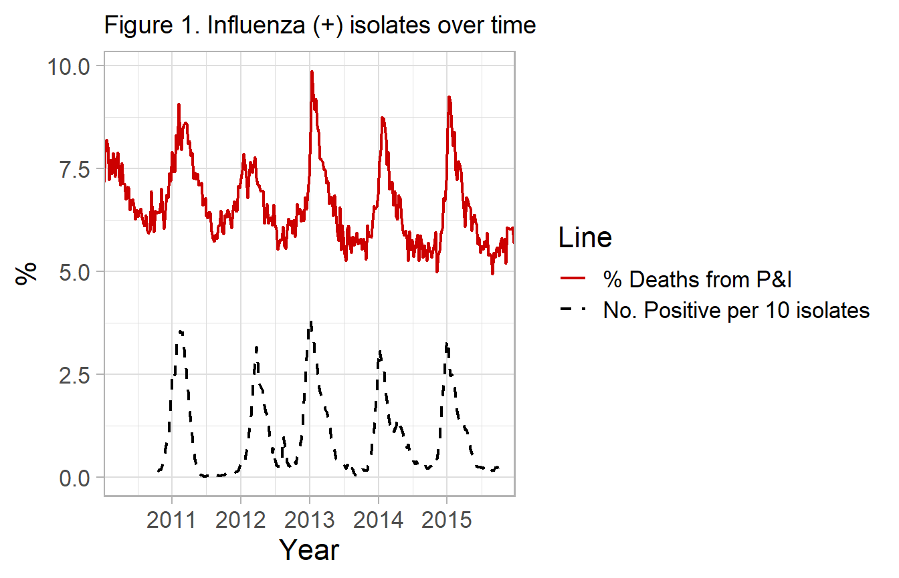
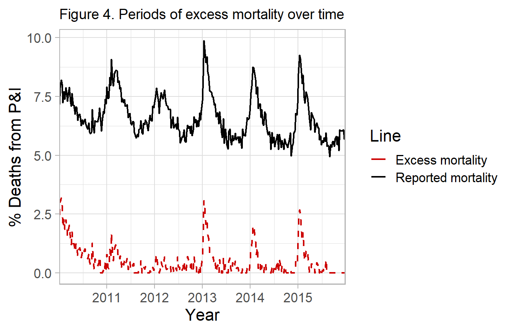

Modified Serfling Models
Kevin W. McConeghy
2018-01-12
Modern Applications of Serfling Models
The cyclical regression model published by Serfling [@Serlfing1963] is not commonly implemented in its original form.
Virology data
In current methods, most researchers incorporate data on the percent of isolates positive with influenza viral types. This is publically available in many cases, see ?nrevss. The data describes the proportion of isolates tested, which may be obtained from participating hospital and outpatient settings. Using this surrogate time-periods of low flu activity can be used to construct a counterfactual for what the rate of the reported influenza outcome would be in the absence of high influenza activity. Whereas the original model relied on “off-season” data and the Fourier term, virology data gives you a more direct measure. This ultimately provides increased confidence that deaths are influenza related and estimated influenza morbidity and mortality.
The example dataset for this package, flumodelr::fludta is a combination of the CDC-122 cities dataset, ?cdc122city and the public virology data ?nrevss. The virology is matched by week, with a lag of 2 weeks to allow for reporting of deaths (i.e. Virology(week_t-2)=Mortality(week_t)).
fludta <- flumodelr::fludta
The original model can be modified like so:
\[Eq \ 1. \ y = \alpha_0 + \beta_1*t + \beta_2*Flu_t + sin(\frac{2 \pi t}{period}) + cos(\frac{2 \pi t}{period}) + u\] Where Flu = no. of isolates positive for influenza / total isolates tested in a given timepoint t. period is a fixed parameter equal to the cycle of the time unit (e.g. 52 weeks in a year).
Many published examples of this exist [@Wang2012, @Matias2016]. Some authors include data on the % RSV (+), as well as breakdown influenza by subtype and even include data on weather, humidity etc. Including individual terms for each viral subtype may have advantages as certain types of influenza are associated with more severe outcomes such as hospitalization and death.
flum()
A general wrapper, flum(), for modeling time-series data is written for this purpose. This will compute a traditional serfling model or other generalized linear models, a smoothed model (adds polynomial terms), a model which allows for virology data, and other options explored below.
Influenza data
fludta <- flumodelr::fludta
fludta
#> # A tibble: 261 x 7
#> year week fludeaths alldeaths perc_fludeaths yrweek_dt prop_flupos
#> <int> <int> <int> <int> <dbl> <date> <dbl>
#> 1 2010 42 726 11269 6.44 2010-10-17 0.0133
#> 2 2010 43 720 11204 6.43 2010-10-24 0.0193
#> 3 2010 44 739 11115 6.65 2010-10-31 0.0173
#> 4 2010 45 724 10321 7.01 2010-11-07 0.0231
#> # ... with 257 more rows
General Estimation Procedure (performed by flum())
add Fourier term
fludta_mod <- fludta %>%
mutate(week2 = row_number(),
theta = 2*week2/52,
sin_f1 = sinpi(theta),
cos_f1 = cospi(theta))See Serfling model background for discussion on Fourier terms and cyclical regression.
add polynomials
fludta_mod <- fludta_mod %>%
mutate(week_2 = week2^2,
week_3 = week2^3,
week_4 = week2^4,
week_5 = week2^5)Estimate coefficients for baseline model
base_fit <- fludta_mod %>%
lm(perc_fludeaths ~ week2 + week_2 + week_3 + week_4 + prop_flupos + sin_f1 + cos_f1, data=., na.action = na.exclude)
summary(base_fit)
#>
#> Call:
#> lm(formula = perc_fludeaths ~ week2 + week_2 + week_3 + week_4 +
#> prop_flupos + sin_f1 + cos_f1, data = ., na.action = na.exclude)
#>
#> Residuals:
#> Min 1Q Median 3Q Max
#> -1.07883 -0.28768 0.01264 0.24720 1.85803
#>
#> Coefficients:
#> Estimate Std. Error t value Pr(>|t|)
#> (Intercept) 6.628e+00 1.621e-01 40.893 < 2e-16 ***
#> week2 3.459e-03 8.054e-03 0.429 0.668
#> week_2 -1.154e-04 1.248e-04 -0.925 0.356
#> week_3 5.958e-07 7.145e-07 0.834 0.405
#> week_4 -9.047e-10 1.352e-09 -0.669 0.504
#> prop_flupos 3.385e+00 4.633e-01 7.306 3.59e-12 ***
#> sin_f1 5.250e-01 5.878e-02 8.933 < 2e-16 ***
#> cos_f1 -5.065e-01 5.285e-02 -9.584 < 2e-16 ***
#> ---
#> Signif. codes: 0 '***' 0.001 '**' 0.01 '*' 0.05 '.' 0.1 ' ' 1
#>
#> Residual standard error: 0.4692 on 253 degrees of freedom
#> Multiple R-squared: 0.7749, Adjusted R-squared: 0.7686
#> F-statistic: 124.4 on 7 and 253 DF, p-value: < 2.2e-16Predict outcome values, assuming no influenza activity
Here we predict the outcome for each observation, given the fitted model base_fit above. We tell R to compute 95% prediction intervals. This is conventional for most modern approaches, see [insert cites]. The original Serfling paper estimated a threshold 1.64 standard deviations above the trend line.
base_pred <- fludta_mod %>%
mutate(prop_flupos = 0) %>% #Note setting to zero
predict(base_fit, newdata=., se.fit=TRUE,
interval="prediction", level=0.90)Critically, before predicting observations, we set the measure of our influenza activity, prop_flupos to zero. This is to estimate the influenza activity at each timepoint, assuming that the proportion of influenza isolates was equal to zero.
Add fitted values to dataset
fludta_fitted <- fludta %>%
add_column(., y0=base_pred$fit[,1], y0_ul=base_pred$fit[,3])
fludta_fitted
#> # A tibble: 261 x 9
#> year week fludeaths alldeaths perc_flu~ yrweek_dt prop_f~ y0 y0_ul
#> <int> <int> <int> <int> <dbl> <date> <dbl> <dbl> <dbl>
#> 1 2010 42 726 11269 6.44 2010-10-17 0.0133 6.19 7.00
#> 2 2010 43 720 11204 6.43 2010-10-24 0.0193 6.27 7.08
#> 3 2010 44 739 11115 6.65 2010-10-31 0.0173 6.35 7.16
#> 4 2010 45 724 10321 7.01 2010-11-07 0.0231 6.44 7.24
#> # ... with 257 more rows % of Deaths from P&I - No. of influenza / pneumonia deaths per 100,000 people.
% of Deaths from P&I - No. of influenza / pneumonia deaths per 100,000 people.
**“Expected %** - A fit of the cyclical regression model, (one Fourier term).
Epidemic Threshold - 90% Upper Prediction Interval (1.64 SD)
This model differs from the original Serfling regressions because of it’s use of influenza virology to generate a counterfactual vs. using an off-season secular trend.
Compute attributable mortality
Excess mortality
You can either report the deaths in excess of the one-sided 95% prediction interval, which are sometimes described as epidemics or severe periods of influenza morbidity and mortality.
df_excess <- fludiff(fludta_fitted, obsvar=perc_fludeaths, fitvar=y0_ul)
df_excess
#> # A tibble: 261 x 10
#> year week fludeaths allde~ perc_f~ yrweek_dt prop_~ y0 y0_ul y_di~
#> <int> <int> <int> <int> <dbl> <date> <dbl> <dbl> <dbl> <dbl>
#> 1 2010 42 726 11269 6.44 2010-10-17 0.0133 6.19 7.00 0
#> 2 2010 43 720 11204 6.43 2010-10-24 0.0193 6.27 7.08 0
#> 3 2010 44 739 11115 6.65 2010-10-31 0.0173 6.35 7.16 0
#> 4 2010 45 724 10321 7.01 2010-11-07 0.0231 6.44 7.24 0
#> # ... with 257 more rowsAttributable influenza mortality
Alternatively, you can simply take the excess deaths above the predicted line and report these as deaths attributable to influenza. Since they are in excess of the predicted deaths in the absence of influenza (i.e. no influenza positive isolates).
df_excess <- fludiff(fludta_fitted, obsvar=perc_fludeaths, fitvar=y0)
df_excess
#> # A tibble: 261 x 10
#> year week fludeaths allde~ perc_f~ yrweek_dt prop_~ y0 y0_ul y_di~
#> <int> <int> <int> <int> <dbl> <date> <dbl> <dbl> <dbl> <dbl>
#> 1 2010 42 726 11269 6.44 2010-10-17 0.0133 6.19 7.00 0.251
#> 2 2010 43 720 11204 6.43 2010-10-24 0.0193 6.27 7.08 0.158
#> 3 2010 44 739 11115 6.65 2010-10-31 0.0173 6.35 7.16 0.299
#> 4 2010 45 724 10321 7.01 2010-11-07 0.0231 6.44 7.24 0.579
#> # ... with 257 more rows
Examples with flum()
Incidence-Rate Difference (Simplest model)
fludta <- flumodelr::fludta
fludta_mod <- flum(fludta, model="ird",
outc=perc_fludeaths, time=yrweek_dt)
fludta_mod %>% select(year, week, perc_fludeaths, y0, y0_ul)original serfling model
fludta <- flumodelr::fludta
fludta_mod <- flum(fludta, model="fluserf",
outc=perc_fludeaths, time=yrweek_dt)
fludta_mod %>% select(year, week, perc_fludeaths, y0, y0_ul)
#> # A tibble: 261 x 5
#> year week perc_fludeaths y0 y0_ul
#> <int> <int> <dbl> <dbl> <dbl>
#> 1 2010 42 6.44 6.50 6.71
#> 2 2010 43 6.43 6.56 6.80
#> 3 2010 44 6.65 6.63 6.90
#> 4 2010 45 7.01 6.70 7.00
#> # ... with 257 more rowsVirology-based model
fludta <- flumodelr::fludta
fludta_mod <- flum(fludta, model="fluglm",
outc=fludeaths, time=yrweek_dt,
bl_type="viral", bl_var=prop_flupos)
fludta_mod %>% select(year, week, fludeaths, y0, y0_ul)Other options
## Without polynomial terms
fludta_mod <- flum(fludta, model="fluglm",
outc=fludeaths, time=yrweek_dt,
bl_type="viral", bl_var=prop_flupos, poly=F)## Epidemic period specified
fludta_mod <- flum(fludta, model="fluglm",
outc=fludeaths, time=yrweek_dt,
bl_type="season", poly=F)## Poisson model with offset term
fludta_mod <- flum(fludta, model="fluglm", outc = fludeaths, time = yrweek_dt,
bl_type="viral", bl_var=prop_flupos,
family=poisson, offset=log(alldeaths)) References
sessioninfo::session_info()
#> - Session info ----------------------------------------------------------
#> setting value
#> version R version 3.4.2 (2017-09-28)
#> os Windows 10 x64
#> system x86_64, mingw32
#> ui RTerm
#> language (EN)
#> collate English_United States.1252
#> tz America/New_York
#> date 2018-01-12
#>
#> - Packages --------------------------------------------------------------
#> package * version date source
#> assertthat 0.2.0 2017-04-11 CRAN (R 3.4.2)
#> backports 1.1.2 2017-12-13 CRAN (R 3.4.2)
#> bindr 0.1 2016-11-13 CRAN (R 3.4.2)
#> bindrcpp * 0.2 2017-06-17 CRAN (R 3.4.2)
#> broom 0.4.3 2017-11-20 CRAN (R 3.4.2)
#> cellranger 1.1.0 2016-07-27 CRAN (R 3.4.2)
#> cli 1.0.0 2017-12-15 Github (r-lib/cli@ab1c3aa)
#> clisymbols 1.2.0 2017-05-21 CRAN (R 3.4.3)
#> colorspace 1.3-2 2016-12-14 CRAN (R 3.4.2)
#> crayon 1.3.4 2017-09-16 CRAN (R 3.4.2)
#> digest 0.6.13 2017-12-14 CRAN (R 3.4.2)
#> dplyr * 0.7.4 2017-09-28 CRAN (R 3.4.2)
#> evaluate 0.10.1 2017-06-24 CRAN (R 3.4.2)
#> flumodelr * 0.0.6 2018-01-12 local
#> forcats * 0.2.0 2017-01-23 CRAN (R 3.4.2)
#> foreign 0.8-69 2017-06-22 CRAN (R 3.4.2)
#> ggplot2 * 2.2.1 2016-12-30 CRAN (R 3.4.2)
#> glue 1.2.0 2017-10-29 CRAN (R 3.4.2)
#> gtable 0.2.0 2016-02-26 CRAN (R 3.4.2)
#> haven 1.1.0 2017-07-09 CRAN (R 3.4.2)
#> hms 0.4.0 2017-11-23 CRAN (R 3.4.2)
#> htmltools 0.3.6 2017-04-28 CRAN (R 3.4.2)
#> httr 1.3.1 2017-08-20 CRAN (R 3.4.2)
#> jsonlite 1.5 2017-06-01 CRAN (R 3.4.2)
#> knitr 1.18 2017-12-27 CRAN (R 3.4.3)
#> labeling 0.3 2014-08-23 CRAN (R 3.4.1)
#> lattice 0.20-35 2017-03-25 CRAN (R 3.4.2)
#> lazyeval 0.2.1 2017-10-29 CRAN (R 3.4.2)
#> lubridate * 1.7.1 2017-11-03 CRAN (R 3.4.2)
#> magrittr 1.5 2014-11-22 CRAN (R 3.4.2)
#> mnormt 1.5-5 2016-10-15 CRAN (R 3.4.1)
#> modelr 0.1.1 2017-07-24 CRAN (R 3.4.2)
#> munsell 0.4.3 2016-02-13 CRAN (R 3.4.2)
#> nlme 3.1-131 2017-02-06 CRAN (R 3.4.2)
#> pillar 1.0.1 2017-11-27 CRAN (R 3.4.3)
#> pkgconfig 2.0.1 2017-03-21 CRAN (R 3.4.2)
#> plyr 1.8.4 2016-06-08 CRAN (R 3.4.2)
#> psych 1.7.8 2017-09-09 CRAN (R 3.4.2)
#> purrr * 0.2.4 2017-10-18 CRAN (R 3.4.2)
#> R6 2.2.2 2017-06-17 CRAN (R 3.4.2)
#> Rcpp 0.12.14 2017-11-23 CRAN (R 3.4.2)
#> readr * 1.1.1 2017-05-16 CRAN (R 3.4.2)
#> readxl 1.0.0 2017-04-18 CRAN (R 3.4.2)
#> reshape2 1.4.3 2017-12-11 CRAN (R 3.4.3)
#> rlang 0.1.6 2017-12-21 CRAN (R 3.4.3)
#> rmarkdown 1.8 2017-11-17 CRAN (R 3.4.2)
#> rprojroot 1.3-2 2018-01-03 CRAN (R 3.4.3)
#> rstudioapi 0.7.0-9000 2018-01-12 Github (rstudio/rstudioapi@109e593)
#> rvest 0.3.2 2016-06-17 CRAN (R 3.4.2)
#> scales * 0.5.0 2017-08-24 CRAN (R 3.4.2)
#> sessioninfo 1.0.1.9000 2017-12-15 Github (r-lib/sessioninfo@c871d01)
#> stringi 1.1.6 2017-11-17 CRAN (R 3.4.2)
#> stringr * 1.2.0 2017-02-18 CRAN (R 3.4.2)
#> tibble * 1.4.1 2017-12-25 CRAN (R 3.4.3)
#> tidyr * 0.7.2 2017-10-16 CRAN (R 3.4.2)
#> tidyverse * 1.2.1 2017-11-14 CRAN (R 3.4.2)
#> utf8 1.1.3 2018-01-03 CRAN (R 3.4.3)
#> withr 2.1.1 2017-12-19 CRAN (R 3.4.3)
#> xml2 1.1.1 2017-01-24 CRAN (R 3.4.2)
#> yaml 2.1.16 2017-12-12 CRAN (R 3.4.3)